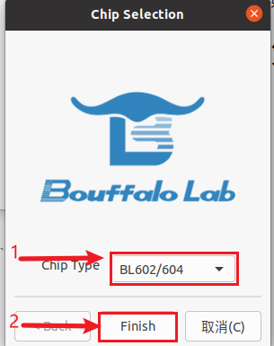
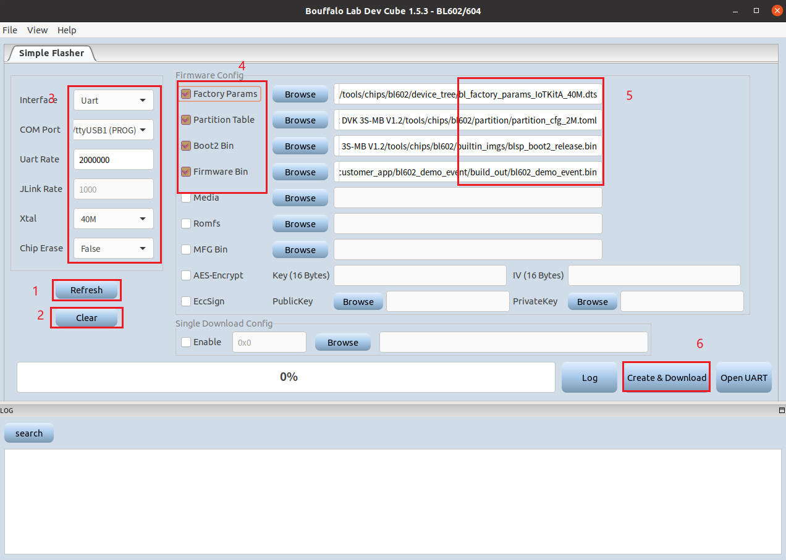
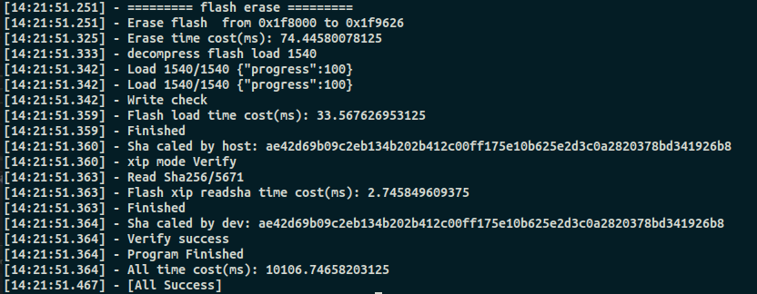

快速入门
本文档旨在指导用户搭建 BL602 (BL602-IoT-DVK-3S)硬件开发的linux软件环境，通过一个简单的示例展示如何编译、下载固件至 BL602 开发板等步骤。
注解
BL-HWC-G1模组linux环境搭建请参考 BL-HWC-G1模组linux环境搭建
概述
BL602 是一款Wi-Fi + BLE组合的芯片组，用于低功耗和高性能应用开发。无线子系统包含2.4G无线电，Wi-Fi 802.11b/g/n和BLE 5.0 基带/MAC设计。微控制器子系统包含一个低功耗的32位RISC-V CPU，高速缓存和存储器。电源管理单元控制低功耗模式。此外，还支持各种安全性能。
第一步：安装准备
在正式开始创建工程前，请先完成工具的安装，具体步骤见下：
- 打开终端，安装make，命令：
sudo apt-get update、sudo apt-get install make - 安装git工具，命令：
sudo apt-get update、sudo apt-get install git - 安装串口工具此处选用的
Gtkterm可以执行命令：sudo apt-get install gtkterm
第二步：获取软件
获取 BL-IOT 的本地副本：打开终端，切换到您要保存代码的工作目录，使用 git clone git@github.com:bouffalolab/bl_iot_sdk.git 命令克隆远程仓库。
第四步：编译工程
- 进入需要编译的工程目录，如进入bl602_demo_event工程，命令：
cd customer_app/bl602_demo_event，进行编译，命令./genromap - 查看编译生成的build_out文件夹，命令：
ls build_out
如果一切正常，编译完成后将生成 bl602_demo_event.bin 文件。
第五步：烧录到设备
软件烧录
进入
/bl_iot_sdk/tools/flash_tool目录下，双击名为BLDevCube的可执行文件。chip type选择BL602/604。打开后界面，进行参数配置，点击
Create & Download:参考如下图：出现如下图所示表明下载成功:

如果一切顺利，烧录完成后，手动复位开发板，应用程序 "bl602_demo_event" 开始运行。
命令行烧录 (仅支持Linux)
进入需要烧录的工程目录，如进入bl602_demo_event工程，命令：
cd customer_app/bl602_demo_event, 执行烧录命令make flash_only,出现如下图所示表明下载成功。
注解
利用tools/flash_tool/目录下的bflb_iot_tool工具，我们也可以自定义烧录命令，详情请参考 bflb_iot_tool使用方法
第六步：监视器
下载完成后，执行命令‘sudo gtkterm’，打开串口终端软件Gtkterm，显示如下图：
选择 配置（C）下的Port，如下图：
配置如下，其中 /dev/ttyUSB1 可能需要根据上面查看的串口号修改：
上面配置完成后，要使用F7和F8来控制uart的控制信号线，保证DTR为黑，RTS为灰色,如下图所示：
连接上后，执行reboot，然后向上查找串口打印记录，便可以查看到相关logo，大致如下：
恭喜，您已完成BL602的入门学习！ 现在，您可以尝试使用 Eclipse 或 Freedom studio 进行debug。